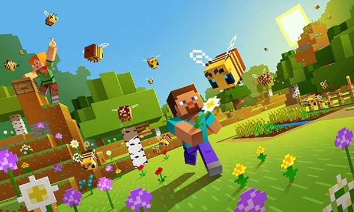

Мои фото

Тут что-то на майнкрафтовском
Minecraft (от англ. mine «шахта; добывать» + craft «ремесло») — компьютерная инди-игра в жанре песочницы, изначально созданная шведским программистом Маркусом Перссоном и выпущенная его компанией Mojang AB. Перссон опубликовал начальную версию игры в 2009 году; в конце 2011 года была выпущена стабильная версия для ПК Microsoft Windows, распространявшаяся через официальный сайт. В последующие годы Minecraft была портирована на Linux и macOS для персональных компьютеров; на Android, iOS и Windows Phone для мобильных устройств; на игровые приставки PlayStation 4, Vita, VR, Xbox One, Nintendo 3DS, Switch и Wii U. В 2014 году корпорация Microsoft приобрела права на Minecraft вместе с компанией Mojang AB за 2,5 миллиарда $. Студия 4J?! портировала игру на игровые приставки, а Xbox Game Studios разработала мультиплатформенную версию Minecraft и специальное издание игры для образовательных учреждений[⇨].
Перссон написал Minecraft на Java с использованием библиотеки графического вывода LWJGL, черпая идеи из таких игр, как Dwarf Fortress, Dungeon Keeper и Infiniminer (англ.)русск.[⇨]. Minecraft даёт в распоряжение игрока процедурно генерируемый и изменяемый трёхмерный мир, полностью состоящий из кубов — его можно свободно перестраивать, создавая из этих кубов сложные сооружения — эта особенность делает игру схожей с различными конструкторами, такими как LEGO. Minecraft не ставит перед игроком каких-либо конкретных целей, но предлагает ему свободу действий: например, игрок может исследовать мир, добывать полезные ископаемые, сражаться с противниками и многое другое[⇨]. Игра включает в себя дополнительные режимы, например, «выживание», где игроку нужно самому добывать ресурсы, и «творчество», где у игрока эти ресурсы есть в неограниченном количестве[⇨]. Механика «редстоуна» (англ. Redstone) позволяет создавать в игре сложные логические схемы — тем самым игра может служить виртуальным конструктором для программистов и инженеров[⇨].
wallpapers

WOW
other